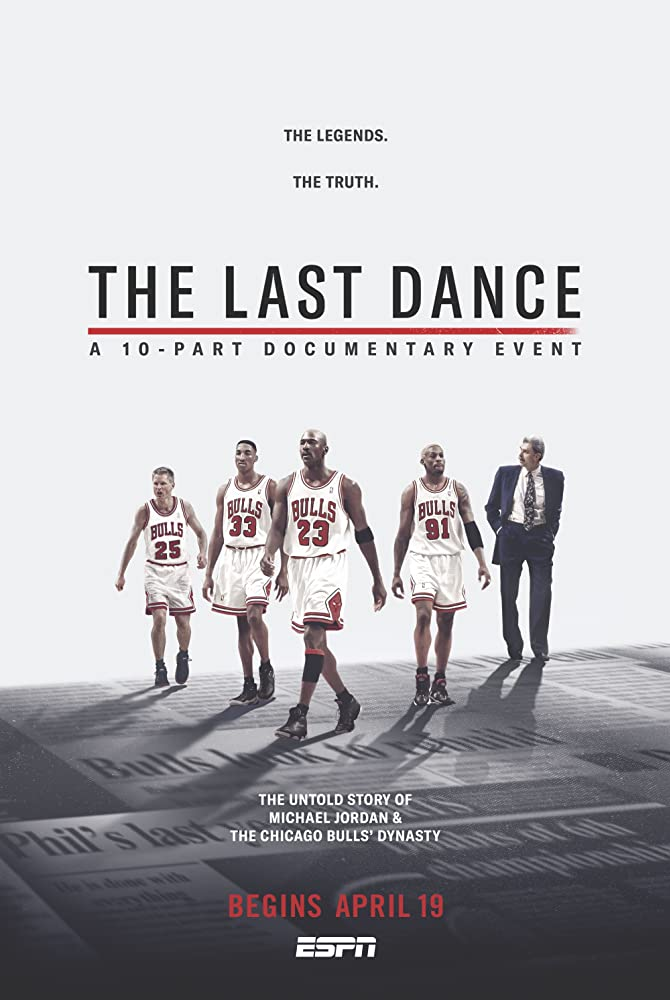

Competities

Last Chance U: Basketball
'Last Chance U' komt naar East Los Angeles. Een zeer gemotiveerde coach traint jonge mannen die willen uitblinken tijdens hun universitaire studie. Kijk zoveel je wilt. Emmy-winnaar Greg Whiteley, maker van 'Cheer' en 'Last Chance U', komt nu met een docuserie over basketbal.

Kuroko's Basketball
Kuroko no Basket volgt de reis van de spelers van Seirin terwijl ze proberen het beste Japanse middelbare schoolteam te worden door het Interhigh Championship te winnen. Om hun doel te bereiken, moeten ze paden kruisen met verschillende krachtige teams, waarvan sommige een van de vijf spelers met goddelijke vermogens hebben, die Kuroko en Taiga een pact sluiten om te verslaan.

The Last Dance
De documentaire blikt terug op de succesvolle carrière van Michael Jordan, die in de jaren 1980 en '90 als basketballer uitgroeide tot een wereldster en verscheidene NBA-titels won met de Chicago Bulls. De serie volgt in het bijzonder het seizoen 1997/98, het laatste seizoen van onder meer Jordan, Scottie Pippen en coach Phil Jackson bij de Bulls.